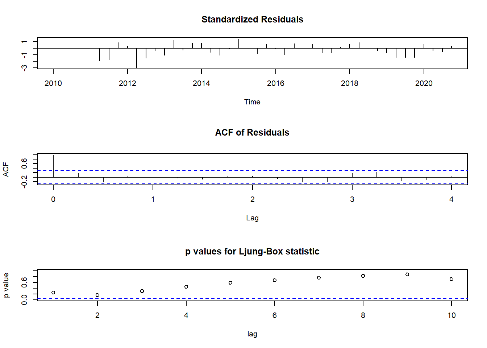

SpaceAndTime
Question 1 Spatial modelling dutch
1 a)
ggplot(data = netherlandsDF) + geom_point(aes(x = longitude, y = latitude,
size = precip, color = precip)) + scale_color_continuous(low = "blue",
high = "red") + labs(title = "Precipitation in Netherlands Stations",
x = "Longitude", y = "Latitude", size = "Precipitation", color = "Precipitation") +
theme_minimal()From what we can see from the data it does seem to be spatially correlated as we can that the Dutch provinces of north Holland, Friesland and Groningen has higher precipitation and as we go south the precipitation does decrease as we can see from the Dutch provinces of Zeeland, north Brabant and Limburg where precipitation is significantly lower than their northern counterparts.
From this data, latitude seems to be the biggest factor in the variation of the precipitation as the longitude only suggests some slight variations in the data.
# Create geodata object
precipitationNetherland_geoR = as.geodata(netherlandsDF, coords.col = c("longitude",
"latitude"), data.col = "precip")
summary(precipitationNetherland_geoR)Number of data points: 220
Coordinates summary
longitude latitude
min 3.500 50.767
max 7.033 53.483
Distance summary
min max
0.001000 3.998498
Data summary
Min. 1st Qu. Median Mean 3rd Qu. Max.
33.9000 80.8500 100.1500 106.5705 137.3500 185.6000 As we can see from the numerical summary of the data the median is different from the mean, which indicates it is not a symmetric distribution of data points and is instead positively skewed since the mean is bigger than the median. As such there are more values on the left side of the distribution.
1 b)
# set seed for reproducibility
set.seed(26041999)
# Select 3 random rows from the data frame
randomRowsPrecipitation = netherlandsDF %>%
sample_n(3)
# Add a new column with labels
randomRowsPrecipitation$label = c("A", "B", "C")
# Print the randomly selected rows
randomRowsPrecipitation# A tibble: 3 × 5
station_name longitude latitude precip label
<chr> <dbl> <dbl> <dbl> <chr>
1 NIJKERK 5.47 52.2 89.1 A
2 WOLPHAARTSDIJK 3.73 51.5 95.9 B
3 EEXT 6.73 53 147. C # Remove the selected rows from the original dataset
netherlandsDF_filtered = netherlandsDF %>%
anti_join(randomRowsPrecipitation)Joining, by = c("station_name", "longitude", "latitude", "precip")# Print the resulting dataframe
netherlandsDF_filtered# A tibble: 217 × 4
station_name longitude latitude precip
<chr> <dbl> <dbl> <dbl>
1 WEST TERSCHELLING 5.22 53.4 130.
2 GRONINGEN-1 6.6 53.2 157.
3 HOORN 5.07 52.6 146.
4 HOOFDDORP 4.7 52.3 130.
5 WINTERSWIJK 6.7 52.0 77.7
6 KERKWERVE 3.87 51.7 91.8
7 WESTDORPE-1 3.87 51.2 87.7
8 OUDENBOSCH 4.53 51.6 84.2
9 ROERMOND 5.97 51.2 56.4
10 PETTEN 4.65 52.8 158.
# … with 207 more rows1 c)
# # Calculate empirical variogram
variogramPrecipitationNetherlands = variog(precipitationNetherland_geoR)variog: computing omnidirectional variogram# Plot empirical variogram
plot(variogramPrecipitationNetherlands)variogramPrecipitationNetherlands$n [1] 1108 2543 3474 3915 3726 3293 2615 1597 811 497 346 147 17From the plotted variogram we can see there a very clear need for a nugget as there is a non-zero value around zero distance, this values seems to be around 100 at the zero distance from how much is it decreasing.
The semi variance continuous to increase with distance till around the distance of 2 degrees distance wise, after this there is a decrease in variance that is not representative of the data as we are more and more uncertain the further we are from our known points, as such we will choose the distance of two as the cut off for the maximum distance.
we know change the maximum distance change and recut our previous variogram.
variogramPrecipitationNetherlands = variog(precipitationNetherland_geoR,
option = "bin", max.dist = 2)variog: computing omnidirectional variogram1 d)
TODO look for better initial values.
Now that we have the variogram we will start by fitting a parametric
krigingVariogramFitted <- variofit(variogramPrecipitationNetherlands)variofit: covariance model used is matern
variofit: weights used: npairs
variofit: minimisation function used: optim Warning in variofit(variogramPrecipitationNetherlands): initial values not
provided - running the default searchvariofit: searching for best initial value ... selected values:
sigmasq phi tausq kappa
initial.value "1962.06" "1.23" "0" "0.5"
status "est" "est" "est" "fix"
loss value: 695488723.456829 krigingVariogramFittedvariofit: model parameters estimated by WLS (weighted least squares):
covariance model is: matern with fixed kappa = 0.5 (exponential)
parameter estimates:
tausq sigmasq phi
0.00 33753473.44 34350.67
Practical Range with cor=0.05 for asymptotic range: 102905.4
variofit: minimised weighted sum of squares = 29453245fitting this variogram we get the estimated values of \(\sigma^2, \phi\) and \(\tau^2\) also known as the nugget
1 h) he predicts using the grid but we have to change it to our own coordinate and the prior use previous results
Question 2
2 a)
We fist start by making the appropriate changes in the data to average the data to quarterly means
AMOCDF$Date = as.Date(AMOCDF$Date, format = "%d/%m/%Y")
## I will now make a column with the quarter and year that I will use
## to create the averages per quarter
AMOCDF$YearQuarter = paste(AMOCDF$Year, AMOCDF$Quarter, sep = "-")
YearQuarterAverage = AMOCDF %>%
group_by(YearQuarter) %>%
summarise(AverageStrength = mean(Strength))Now we will convert the average data to a time series object to be able to plot it
tsAtlantic = ts(YearQuarterAverage, start = c(2010, 1), frequency = 4)
tsAtlantic = tsAtlantic[, "AverageStrength"]
plot.ts(tsAtlantic)Trend analysis
From this graph we can see a yearly oscillation of Sverdrups. We can also identify that the peaks in Sverdrups are usually in the last quarter before the start of a new year and the valleys are on the second quarter of the year.
The data does seem stationary enough that if we were to differentiate we would start losing some of the structure.
2 b)
ACF
First we will start by checking the ACF(Autocorrelation Function) and PACF(Partial Autocorrelation Function) to check for if we have stationary data or not to help us decide between an ARMA or an ARIMA model.
acf(tsAtlantic)We can see that for ACF OF Average strength slowly decreases as lag increases to infinity with lag = 3 still being a significant values, meaning it is not a simple MA model as AR is clearly not quickly cut-off.
PACF
pacf(tsAtlantic)The PACF seems to be cut-off at lag 0,5 indicating an AR model might be a best fit for our data to be a but with some almost significant values after the cut it might be also appropriate to some non-zero q values to confirm our initial assumption
As such we will now proceed to fit multiple model firstly with the initial assumption that, then I will both use models with non-zero q and the model given by the auto.arima function to double check that the assumptions made by the previous analyses is correct.
# it is always a good practice to try multiple values of p,d and q to
# see if we can do better we then obviously compare via the AIC of the
# models and their log likelihoods it is never enough to check those we
# also need to check the residuals
## order is p, d ,q
## initial models under our assumptions
model100 = Arima(tsAtlantic, order = c(1, 0, 0))
model200 = Arima(tsAtlantic, order = c(2, 0, 0))
model300 = Arima(tsAtlantic, order = c(3, 0, 0))
## now I will add postive q values
model101 = Arima(tsAtlantic, order = c(1, 0, 1))
model102 = Arima(tsAtlantic, order = c(1, 0, 2))
model103 = Arima(tsAtlantic, order = c(1, 0, 3))
model201 = Arima(tsAtlantic, order = c(2, 0, 1))
model202 = Arima(tsAtlantic, order = c(2, 0, 2))
model203 = Arima(tsAtlantic, order = c(2, 0, 3))
model301 = Arima(tsAtlantic, order = c(3, 0, 1))
model302 = Arima(tsAtlantic, order = c(3, 0, 2))
model303 = Arima(tsAtlantic, order = c(3, 0, 3))
## lastly we will use auto.arima without seasonality to confirm our
## inital assumptions
modelAuto = auto.arima(tsAtlantic, max.d = 0, max.p = 5, max.q = 5, seasonal = FALSE)best model selection
model100Series: tsAtlantic
ARIMA(1,0,0) with non-zero mean
Coefficients:
ar1 mean
0.0665 16.3878
s.e. 0.1788 0.3726
sigma^2 = 5.572: log likelihood = -99.2
AIC=204.41 AICc=205.01 BIC=209.76model200Series: tsAtlantic
ARIMA(2,0,0) with non-zero mean
Coefficients:
ar1 ar2 mean
0.0990 -0.5565 16.4298
s.e. 0.1576 0.1488 0.2113
sigma^2 = 4.321: log likelihood = -93.45
AIC=194.9 AICc=195.92 BIC=202.04model300Series: tsAtlantic
ARIMA(3,0,0) with non-zero mean
Coefficients:
ar1 ar2 ar3 mean
0.1626 -0.5690 0.1464 16.4227
s.e. 0.1729 0.1479 0.1708 0.2409
sigma^2 = 4.35: log likelihood = -93.09
AIC=196.17 AICc=197.75 BIC=205.1As we can see from these inital models ARIMA(2,0,0) is the model that has the best fit has we can see from its lower AIC score of 194,9.
Now we will check against the other models to check the validity of our assumptions.
model101Series: tsAtlantic
ARIMA(1,0,1) with non-zero mean
Coefficients:
ar1 ma1 mean
-0.4204 0.7718 16.3721
s.e. 0.2390 0.1466 0.4067
sigma^2 = 5.045: log likelihood = -96.64
AIC=201.29 AICc=202.31 BIC=208.43model102Series: tsAtlantic
ARIMA(1,0,2) with non-zero mean
Coefficients:
ar1 ma1 ma2 mean
0.0230 0.1275 -0.4485 16.4289
s.e. 0.3051 0.2420 0.1348 0.2224
sigma^2 = 4.651: log likelihood = -94.41
AIC=198.81 AICc=200.39 BIC=207.73model103Series: tsAtlantic
ARIMA(1,0,3) with non-zero mean
Coefficients:
ar1 ma1 ma2 ma3 mean
-0.5284 0.7214 -0.3646 -0.3072 16.4299
s.e. 0.9228 0.8649 0.2077 0.3545 0.2195
sigma^2 = 4.733: log likelihood = -94.25
AIC=200.5 AICc=202.77 BIC=211.21model201Series: tsAtlantic
ARIMA(2,0,1) with non-zero mean
Coefficients:
ar1 ar2 ma1 mean
-0.0669 -0.5475 0.2187 16.4255
s.e. 0.2740 0.1555 0.2883 0.2300
sigma^2 = 4.366: log likelihood = -93.15
AIC=196.31 AICc=197.88 BIC=205.23model202Series: tsAtlantic
ARIMA(2,0,2) with non-zero mean
Coefficients:
ar1 ar2 ma1 ma2 mean
0.0787 -0.9982 -0.0255 0.9999 16.4015
s.e. 0.0285 0.0066 0.0899 0.1158 0.2684
sigma^2 = 3.378: log likelihood = -89.46
AIC=190.91 AICc=193.18 BIC=201.62model203Series: tsAtlantic
ARIMA(2,0,3) with non-zero mean
Coefficients:
ar1 ar2 ma1 ma2 ma3 mean
0.0325 -0.9621 0.0499 0.8487 0.4147 16.4028
s.e. 0.0645 0.0442 0.1987 0.2041 0.2511 0.3044
sigma^2 = 3.315: log likelihood = -89.07
AIC=192.13 AICc=195.25 BIC=204.62model301Series: tsAtlantic
ARIMA(3,0,1) with non-zero mean
Coefficients:
ar1 ar2 ar3 ma1 mean
0.4092 -0.5931 0.2864 -0.2467 16.4191
s.e. 0.6330 0.1651 0.3580 0.6291 0.2537
sigma^2 = 4.449: log likelihood = -93.03
AIC=198.06 AICc=200.34 BIC=208.77model302Series: tsAtlantic
ARIMA(3,0,2) with non-zero mean
Coefficients:
ar1 ar2 ar3 ma1 ma2 mean
0.2684 -0.9851 0.2222 -0.3030 1.0000 16.4144
s.e. 0.1999 0.0305 0.1995 0.1453 0.1921 0.2922
sigma^2 = 3.392: log likelihood = -89.53
AIC=193.06 AICc=196.17 BIC=205.54model303Series: tsAtlantic
ARIMA(3,0,3) with non-zero mean
Coefficients:
ar1 ar2 ar3 ma1 ma2 ma3 mean
-0.3983 -0.9518 -0.4263 0.4381 0.7816 0.7352 16.4197
s.e. 0.3385 0.0412 0.3442 0.2946 0.1690 0.2422 0.2691
sigma^2 = 3.352: log likelihood = -88.54
AIC=193.08 AICc=197.19 BIC=207.35In this initial analysis we have found models that do have a lower AIC lower log likelihood than our previous best model, however these model ma’s standard error are to close the the ma values indicating that while we are getting a better fit we might be overfitting to our data.
As such this does confirm our initial assumption for the choice of a zero q value.
Now lastly we will check if the auto.arima function does comfirm our initial assumptions.
modelAutoSeries: tsAtlantic
ARIMA(2,0,0) with non-zero mean
Coefficients:
ar1 ar2 mean
0.0990 -0.5565 16.4298
s.e. 0.1576 0.1488 0.2113
sigma^2 = 4.321: log likelihood = -93.45
AIC=194.9 AICc=195.92 BIC=202.04The function does confirm our assumption that ARIMA(2,0,0) is indeed the best model.
We will now check the residuals to verify if any of ou previously selected model validates well or if it is simply the best of bad models.
talk about the model being more easily explainability becaues MA = 0
Best model residual validation
tsdiag(model200)Initially from the standardised residuals plot we can identify some sort of sinusoidal pattern, this implies that there is a seasonal trend that is not being accounted for in our model and as such this trends needs to be accounted in future models to better explain and increase the prediction power of a new model.
Forecasting
Now using the forecast function we will forecast the next 4 quarters of 2021
forecast(model200, 4) Point Forecast Lo 80 Hi 80 Lo 95 Hi 95
2021 Q1 16.50240 13.83841 19.16639 12.42818 20.57662
2021 Q2 14.81104 12.13403 17.48804 10.71691 18.90517
2021 Q3 16.22919 13.18168 19.27669 11.56843 20.88994
2021 Q4 17.31076 14.24941 20.37212 12.62882 21.99271But this data is better visualized in a graph to better understand if the predictions are sensible compared to our real data.
predictedArimaDF = data.frame(forecast(model200, 4))
predictedArimaDF$YearQuarter = c("2021-Q1", "2021-Q2", "2021-Q3", "2021-Q4")
# Combine real_data and pred_data into a single data frame
combinedDataframeAMOC <- rbind(data.frame(Date = YearQuarterAverage$YearQuarter,
Temperature = YearQuarterAverage$AverageStrength, Type = "Real"), data.frame(Date = predictedArimaDF$YearQuarter,
Temperature = predictedArimaDF$Point.Forecast, Type = "Predicted"))
predictedArimaDF$Temperature = predictedArimaDF$Point.Forecast
predictedArimaDF$Type = "Predicted"
# Create the ggplot
plotARIMA <- ggplot(combinedDataframeAMOC, aes(x = Date, y = Temperature,
color = Type, group = 1)) + geom_line() + scale_color_manual(values = c("blue",
"red"))
# Add the 95% confidence interval
plotARIMA <- plotARIMA + geom_ribbon(data = predictedArimaDF, aes(x = YearQuarter,
ymin = Lo.95, ymax = Hi.95), fill = "red", alpha = 0.2)
# Adjust the x-axis labels
plotARIMA <- plotARIMA + scale_x_discrete(breaks = combinedDataframeAMOC$Date[c(TRUE,
rep(FALSE, 3))], labels = combinedDataframeAMOC$Date[c(TRUE, rep(FALSE,
3))])
plotARIMA <- plotARIMA + theme(axis.text.x = element_text(angle = 90, vjust = 0.5,
size = 8))
# Display the plot
print(plotARIMA)
As we can see from the graph the ARIMA (2,0,0) seems to give us a sensible forecast for the 2021 quarter values, however as we can see the interval of the prediction accuracy our model is not too certain on the values most likely due to our model not accounting for the seasonal cycle of our data.
2 c)
Initial assumptions
From the previous exploratory analysis of the data we have established that the data did not need to be differentiated since it was constant, this translates to polynomial DLM component of order 2 that will use linear model to account for this type of changes in the data.
Furthermore, from the residual analysis we have inferred that there is an underlying seasonal trend present on the data, this seasonal trend will be represented by a seasonal component of frequency 4 to represent the 4 quarters per year.
model fitting
## linear model, order = 2, quadratic order = 3 , etc
## what we want is a linear model with a seasonal component so we add
## the 2 components together in a model
## things to try, another term like quadratic, or a arma component
## stacked on top of this
## Initial model with a linear polynomial and a seasonal component
buildFun = function(x) {
dlmModPoly(order = 2, dV = exp(x[1]), dW = c(0, exp(x[2]))) + dlmModSeas(frequency = 4,
dV = 0, dW = c(exp(x[3]), rep(0, 2)))
}
linearDLM = dlmMLE(tsAtlantic, parm = c(0, 0, 0), build = buildFun)
linearDLM$par[1] 1.151339 -18.078101 -2.189479fittedLinearDLM = buildFun(linearDLM$par)
V(fittedLinearDLM) [,1]
[1,] 3.162425W(fittedLinearDLM) [,1] [,2] [,3] [,4] [,5]
[1,] 0 0.000000e+00 0.000000 0 0
[2,] 0 1.408576e-08 0.000000 0 0
[3,] 0 0.000000e+00 0.111975 0 0
[4,] 0 0.000000e+00 0.000000 0 0
[5,] 0 0.000000e+00 0.000000 0 0## second model with a quadratic polynomial and a seasonal component
buildFunQuad = function(x) {
dlmModPoly(order = 3, dV = exp(x[1]), dW = c(0, exp(x[2]), exp(x[3]))) +
dlmModSeas(frequency = 4, dV = 0, dW = c(exp(x[4]), rep(0, 2)))
}
quadraticDLM = dlmMLE(tsAtlantic, parm = c(0, 0, 0, 0), build = buildFunQuad)
quadraticDLM$par[1] 1.161355 -17.807081 -28.603103 -2.352292fittedQuadraticDLM = buildFunQuad(quadraticDLM$par)
V(fittedQuadraticDLM) [,1]
[1,] 3.194257W(fittedQuadraticDLM) [,1] [,2] [,3] [,4] [,5] [,6]
[1,] 0 0.000000e+00 0.000000e+00 0.00000000 0 0
[2,] 0 1.847069e-08 0.000000e+00 0.00000000 0 0
[3,] 0 0.000000e+00 3.782948e-13 0.00000000 0 0
[4,] 0 0.000000e+00 0.000000e+00 0.09515082 0 0
[5,] 0 0.000000e+00 0.000000e+00 0.00000000 0 0
[6,] 0 0.000000e+00 0.000000e+00 0.00000000 0 0TODO include dlm with arima?
Now we will compare both models through their log likelihood using the dlmLL function and see if the extra flexibility from the extra polynomial function is providing a better fit
dlmLL(tsAtlantic, fittedLinearDLM)[1] 94.98804dlmLL(tsAtlantic, fittedQuadraticDLM)[1] 108.043As we can see the dlm model using only a linear polynomial has a lower log likelihood than the model with an extra quadratic term, meaning this extra flexibility does not contribute to a better model fit and as such we will use the linear fitted model to do our forecasting.
amocPredict <- dlmFilter(tsAtlantic, mod = fittedLinearDLM)
summary(amocPredict) Length Class Mode
y 44 ts numeric
mod 10 dlm list
m 225 mts numeric
U.C 45 -none- list
D.C 225 -none- numeric
a 220 mts numeric
U.R 44 -none- list
D.R 220 -none- numeric
f 44 ts numericx <- cbind(tsAtlantic, dropFirst(amocPredict$a[, c(1, 3)]))
x <- window(x, start = c(2010, 1))
colnames(x) <- c("Gas", "Trend", "Seasonal")
plot(x, type = "o", main = "Atlantic AMOC at 26,5N 2010-2020")amocForecast = dlmForecast(amocPredict, nAhead = 4)
summary(amocForecast) Length Class Mode
a 20 mts numeric
R 4 -none- list
f 4 ts numeric
Q 4 -none- list dim(amocForecast$a)[1] 4 5dim(amocForecast$f)[1] 4 1sqrtR <- sapply(amocForecast$R, function(x) sqrt(x[1, 1]))
pl <- amocForecast$a[, 1] + qnorm(0.025, sd = sqrtR)
pu <- amocForecast$a[, 1] + qnorm(0.975, sd = sqrtR)
x <- ts.union(window(tsAtlantic, start = c(2010, 1)), amocForecast$a[, 1],
amocForecast$f, pl, pu)
par(mar = c(4, 4, 2, 2))
plot(x, plot.type = "single", type = "o", pch = c(1, 20, 3, NA, NA), col = c("darkgrey",
"brown", "brown", "blue", "blue"), ylab = "Log gas consumption")
legend("bottomright", legend = c("Observed", "Forecast", "95% interval"),
bty = "n", pch = c(1, 20, NA), lty = 1, col = c("darkgrey", "brown",
"blue"))tsdiag(amocPredict)
2 d)
Again comparing the forecast values and their respective prediction intervals as we can see from the graphs bellow the dlm model has smaller prediction intervals, most likely due to being able to explain the underlying seasonal trend reducing therefore the uncertainty in comparison the ARIMA model.
print(plotARIMA)sqaretRoot <- sapply(amocForecast$R, function(x) sqrt(x[1, 1]))
predictionLow <- amocForecast$a[, 1] + qnorm(0.025, sd = sqaretRoot) ## Low
predictionUpper <- amocForecast$a[, 1] + qnorm(0.975, sd = sqaretRoot) ## Upper
x <- ts.union(window(tsAtlantic, start = c(2010, 1)), amocForecast$a[, 1],
amocForecast$f, predictionLow, predictionUpper)
par(mar = c(4, 4, 2, 2))
plot(x, plot.type = "single", type = "o", pch = c(1, 20, 3, NA, NA), col = c("darkgrey",
"brown", "brown", "blue", "blue"), ylab = "Log gas consumption")
legend("bottomright", legend = c("Observed", "Forecast", "95% interval"),
bty = "n", pch = c(1, 20, NA), lty = 1, col = c("darkgrey", "brown",
"blue"))
2 e)
# AMOCDFMonthly <- AMOCDF %>% mutate(YearMonth = paste0(year(Date),
# '-', month(Date, label = TRUE, abbr = FALSE)))Question 3
Question 3 a)
I will start with the time series analysis of the temperature in California
other approach see max temp in the entire state with 8 cities
TODO WARNING
For a dataset of daily data with only 1 year of a cycle data available a daily frequency won’t be a very good fit because we only have one observation per cycle, we need a hidden entry to capture the 12 months instead
californiaTempDF$Date = as.Date(as.character(californiaTempDF$Date), format = "%Y%m%d",
origin = "1970-01-01")
## its better to just get a time series object for each city and plot
## each of those in the same plot
tsCaliforniaSanDiegoTemp = ts(californiaTempDF$`San Diego`, start = c(2012,
1), frequency = 366)plot.ts(tsCaliforniaSanDiegoTemp)californiaLongTempDF = pivot_longer(californiaTempDF, cols = -Date, names_to = "Location",
values_to = "Temperature")
spatialTemperatureCaliforniaDF = merge(californiaLongTempDF, californiaSpatialDataDF)
ggplot(data = spatialTemperatureCaliforniaDF) + geom_point(aes(x = Lat, y = Long,
color = Temperature, size = Temperature)) + scale_color_continuous(low = "blue",
high = "red") + labs(title = "Precipitation in Netherlands Stations",
x = "Longitude", y = "Latitude", color = "Precipitation") + theme_minimal()3 b)
geoDataCalifornia = as.geodata(spatialTemperatureCaliforniaDF, coords.col = 4:5,
data.col = "Temperature", covar.col = "Elev")as.geodata: 4004 replicated data locations found.
Consider using jitterDupCoords() for jittering replicated locations.
WARNING: there are data at coincident or very closed locations, some of the geoR's functions may not work.
Use function dup.coords() to locate duplicated coordinates.
Consider using jitterDupCoords() for jittering replicated locations variogramCalifornia = variog(geoDataCalifornia)variog: computing omnidirectional variogram
variog: co-locatted data found, adding one bin at the originplot(variogramCalifornia)